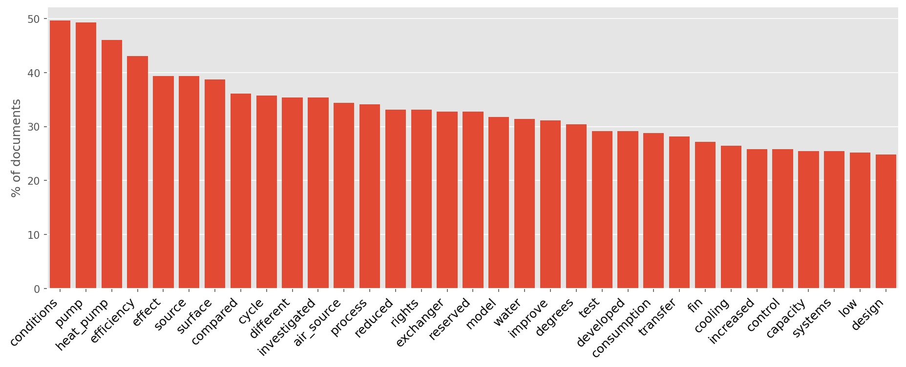
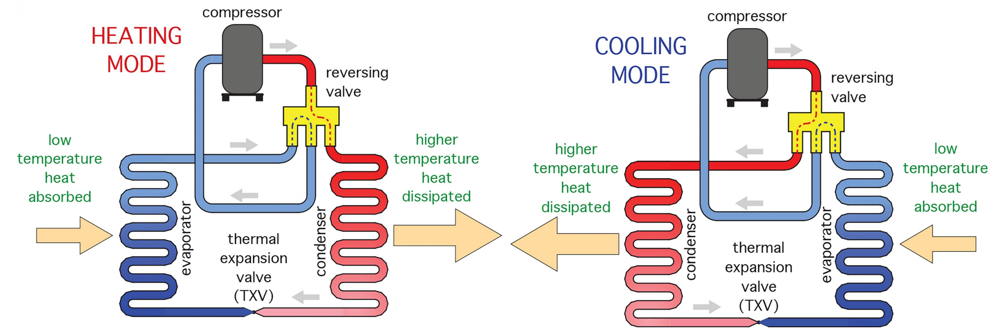
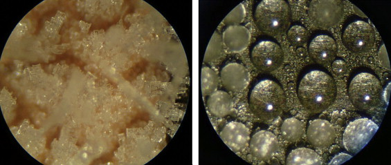
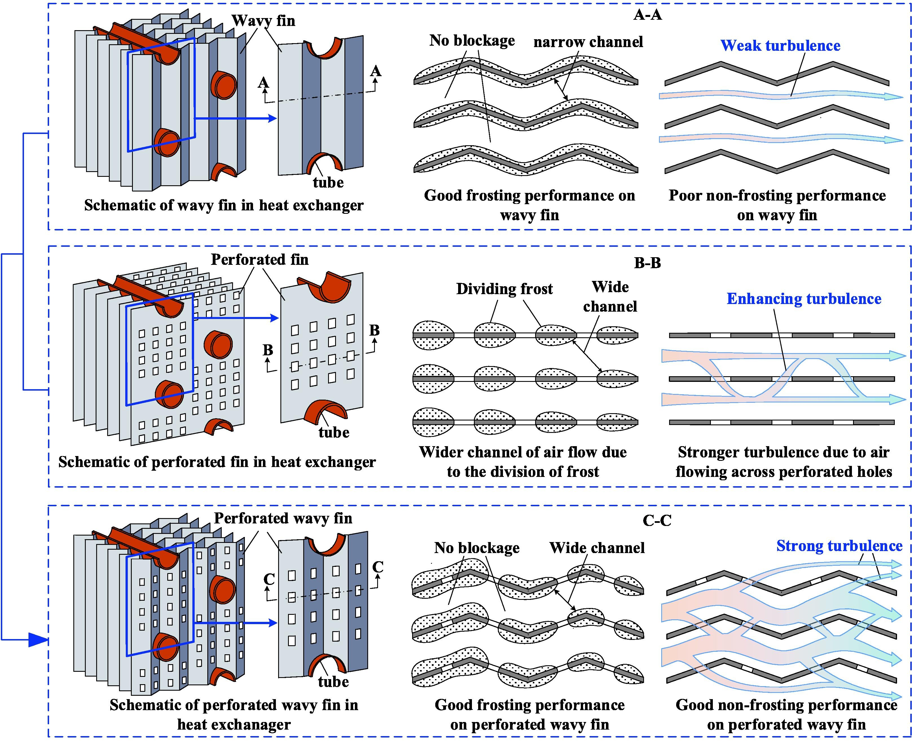
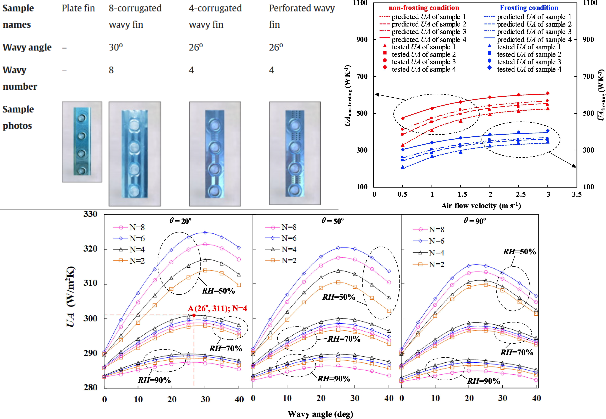

Técnicas de Deshielo de Evaporadores: Análisis Bibliométrico
Propuesta de Tesis
Alumno: Pablo Pacheco Pérez
Profesor Patrocinante: Dra. Issis Quispe Fuentes
Profesor Co-guía: Dr. Luis Silva Llanca
Universidad de La Serena
Departamento de Ingeniería en Alimentos
Contenido
Motivación
Análisis bibliométrico
- Extracción de datos y Procesamiento
- Modelación de tópicos
- Espectroscopía de año de publicaciones
- Análisis de redes
Propuesta de Trabajo
- Objetivos
- Hipótesis
- Metodología
- Publicaciones
Motivación
Crisis a nivel mundial
- Cambio climático
- Pérdida de naturaleza y biodiversidad
- Contaminación y desechos
Agenda 2030
- Objetivos de desarrollo sostenible (SDG)
- Mejorar la sostenibilidad de la cadena de frío de los alimentos

Motivación
Total de alimentos para consumo humano
- Se pierde un 14% (1)
- Se desperdicia un 17% (2)
- Costo para economía mundial: 936.000M USD/año (3)
Falta de refrigeración eficaz
- En 2017 se perdió el 12% de producción alimentaria mundial (4)
(1) Organización de las Naciones Unidas para la Alimentación y la Agricultura [FAO], 2019
(2) PNUMA, 2021
(3) FAO, 2014a
(4) Instituto Internacional de Refrigeración [IIF/IIR], 2021a
Motivación
Cambio climático: Emisiones por pérdida y desperdicio de alimentos
- Cadena de frío de los alimentos: responsable de alrededor del 4% de las emisiones totales mundiales de gases de efecto invernadero
Objetivos de desarrollo sostenible (7 y 13)
- Lograr altos estándares de desempeño ambiental
- Reducir el consumo de energía
- Utilizar fuentes de energía renovables
(1) IIF/IIR, 2021
Análisis Bibliométrico
- Obtención y procesamiento de datos
- Descripción de datos
- Modelación de tópicos
- Espectroscopía de publicaciones
- Análsis de redes
- Conclusiones
Análisis bibliométrico
Evaluar y visualizar la producción científica - estudio cuantitativo.
Seleccionar revistas o congresos con alta probabilidad de publicación.
Identificar líderes en trabajos, autores e instituciones.
Evaluar colaboraciones que generan mayor visibilidad.
Detectar temas emergentes y oportunidades de innovación.
Problema: Deshielo de evaporadores
El agua contenida en el aire se condensa sobre las aletas y los tubos $\rightarrow$ formación de hielo
Formación de escarcha en sistemas HVAC y refrigeración
- Actúa como aislante térmico.
- Disminuye el COP del sistema y aumenta el consumo energético.
- Puede reducir hasta en un 75 % la eficiencia de transferencia de calor.
Sarmiento, A. P., de Sá Sarmiento, F. I., Shooshtari, A., and Ohadi, M. (2024). A review of recent progress in active frost prevention/control techniques in refrigeration and HVAC systems. Applied Thermal Engineering, 253, 123680.
Análisis bibliométrico - Procesamiento de datos
- WOS
- Búsqueda: TS = (evaporator* AND (defrosting* OR anti-frosting* OR defrost*))
- Documentos: Papers | Review
- Intervalo de tiempo: 1978 - 2025
- N° de documentos: 314
Análisis Bibliométrico - Herramientas

-
litstudy
Heldens, S. et al. (2022). litstudy: A Python package for literature reviews. SoftwareX, 20, 101207.
Amsterdam Science Park. -
pybibx
Pereira, V., Basilio, M. P., and Santos, C. H. T. (2025). PyBibX – a Python library for bibliometric and scientometric analysis powered with artificial intelligence tools. Data Technologies and Applications.
Universidade Federal Fluminense. -
metaknowledge
McLevey, J., and McIlroy-Young, R. (2017). Introducing metaknowledge: Software for computational research in information science, network analysis, and science of science. Journal of Informetrics, 11(1), 176–197.
University of Waterloo - University of Chicago.
Análisis bibliométrico - Reporte general
Generado con PyBibX
| Timespan | 1978–2025 |
| Countries | 34 |
| Institutions | 268 |
| Sources | 68 |
| References | 4660 |
| Languages | 3 |
| Documents | 300 |
| Article | 230 |
| Retracted Publication | 1 |
| Proceedings Paper | 55 |
| Review | 12 |
| Avg Docs/Author | 1.32 |
| Avg Docs/Institution | 8.71 |
| Avg Docs/Source | 3.66 |
| Avg Docs/Year | 8.11 |
| Authors | 919 |
| Keywords | 699 |
| Keywords Plus | 359 |
| Single-Authored | 11 |
| Multi-Authored | 289 |
Análisis bibliométrico - Reporte general
TS = (evaporator* AND (defrosting* OR anti-frosting* OR defrost*))
Análisis bibliométrico - Reporte general
TS = (evaporator* AND (defrosting* OR anti-frosting* OR defrost*))
Espectroscopía del Año de Publicación de Referencia (RPYS)
Analiza el impacto histórico de publicaciones científicas.
Detecta años pico en citas y contribuciones clave.
Se basa en contar los años de las referencias citadas.
Muestra la influencia acumulada a lo largo del tiempo.
Usa desviación respecto a la mediana para ajustar datos.
Elimina sesgos y revela rupturas conceptuales e hitos.
Comins, J. A., and Hussey, T. W. (2015). Compressing multiple scales of impact detection by Reference Publication Year Spectroscopy. Journal of Informetrics, 9(3), 449–454.
Wray, K. B., and Bornmann, L. (2015). Philosophy of science viewed through the lens of “Referenced Publication Years Spectroscopy” (RPYS). Scientometrics, 102, 1987–1996.
Espectroscopía del Año de Publicación de Referencia
Espectroscopía
| Cita | Nº de citas |
|---|---|
| Song et al. (2018). Review on improvement for air source heat pump units during frosting and defrosting. Applied Energy, 211, 1150–1170. | 39 |
| Song et al. (2018). Experimental study on time-based start defrosting control strategy optimization for air source heat pumps. Energy and Buildings, 178, 26–37. | 22 |
| Amer and Wang (2017). Review of passive defrosting surface methods in refrigeration systems. | 34 |
| Li et al. (2017). Improving defrosting performance by controlling frost distribution in household refrigerators. International Journal of Refrigeration, 77, 136–148. | 15 |
| Wang et al. (2015). Effects of surface characteristic on frosting and defrosting in fin-tube heat exchangers. Applied Thermal Engineering, 75, 1126–1132. | 24 |
| Zhu et al. (2015). Temperature–Humidity–Time defrosting control method for air-source heat pumps. International Journal of Refrigeration, 54, 45–54. | 23 |
Espectroscopía
Destacado - No Review
Li et al. (2017). Improving defrosting performance by controlling frost distribution in household refrigerators. International Journal of Refrigeration, 77, 136–148.
- Eficiencia de descongelación $\uparrow$ 29.8%
- Mejora distribución de masa de escarcha
Destacado - No Review
Wang et al. (2015). Effects of surface characteristic on frosting and defrosting in fin-tube heat exchangers. Applied Thermal Engineering, 75, 1126–1132.
Destacado - No Review

Wang et al. (2015). Effects of surface characteristic on frosting and defrosting in fin-tube heat exchangers. Applied Thermal Engineering, 75, 1126–1132.
Análisis de Redes
Permite estudiar la colaboración entre investigadores y las corrientes intelectuales de un campo.
Se analizan redes de: coautoría, citación directa, acoplamiento bibliográfico y co-citación.
Un grafo se define como una estructura matemática que modela las relaciones entre entidades académicas:
$$ G(V, E) $$
Donde:
Nodos (V): representan unidades discretas como autores, artículos o palabras clave.
Aristas (E): representan relaciones entre nodos, como colaboraciones o citaciones.
Los conjuntos se definen como:
$$ V = \{v_1, v_2, ..., v_N\} \quad \text{y} \quad E = \{e_1, e_2, ..., e_M\} $$
Red de Coautoría
Se define un grafo no dirigido $\mathcal{G}_C = (V, E)$ donde:
• $V = \{a_1, a_2, \dots, a_n\}$ es el conjunto de autores.
• $E = \{(a_i, a_j) \mid \exists\, p_k \text{ tal que } a_i, a_j \, \text{coautores de } p_k\}$.
Representa colaboraciones académicas y permite identificar comunidades activas o investigadores influyentes.
Red de Citación
Grafo dirigido $\mathcal{G}_{\text{Cit}} = (V, E)$ donde:
• $V = \{d_1, d_2, \dots, d_n\}$ es el conjunto de documentos.
• $E = \{(d_i, d_j) \mid d_i \text{ cita a } d_j\}$.
Esta red modela el flujo de conocimiento científico. Los nodos con muchas citas recibidas representan trabajos influyentes.
Small, H. (1973). Co‐citation in the scientific literature: A new measure of the relationship between two documents. Journal of the American Society for information Science, 24(4), 265-269.
Red de Coautores
Red de Coautores
Red de Citación
Red de Citación
Modelación de Tópicos - NNMF
Identificar tendencias, temas emergentes y áreas consolidadas.
Segmentar el conocimiento dentro de un campo.
Word Cloud $\rightarrow$ documentos representativos $\rightarrow$ Nombre del tópico
Non-negative Matrix Factorization
Algoritmo de Agrupación $$ \mathbf{X} = \mathbf{W} \mathbf{H} $$ donde $\mathbf{X} \in \R^{p \times n}$, $\mathbf{W} \in \R^{p \times r}$ y $\mathbf{H} \in \R^{r \times n}$
Norma de Frobenius: forma de medir la aproximación numérica de $\mathbf{X} \simeq \mathbf{W} \mathbf{H}$: $$ \text{Error} = \text{min} \left| \left| \mathbf{X} - \mathbf{W} \mathbf{H} \right| \right|_F^2 = \sum_{i,j} \left(\mathbf{X} - \mathbf{W} \mathbf{H}\right)_{i,j}^2 $$
Problema de optimización: $$ \underset{\mathbf{W},\mathbf{H}}{\text{min}} \,\, \text{Error} \quad \text{sujeto a} \quad W \ge 0 \,\,\, \text{y} \,\,\, H \ge 0 $$
Shahnaz, F., Berry, M. W., Pauca, V. P., and Plemmons, R. J. (2006). Document clustering using nonnegative matrix factorization. Information Processing and Management, 42(2), 373-386.
Heldens, S., Sclocco, A., Dreuning, H., van Werkhoven, B., Hijma, P., Maassen, J., and van Nieuwpoort, R. V. (2022). litstudy: A Python package for literature reviews. SoftwareX, 20, 101207.
Tópico 1: Energías Renovables, Sustentabilidad y Adaptación al Medio Ambiente
- Integración de fuentes renovables en sistemas térmicos, buscando eficiencia y sustentabilidad.
- Adaptación a condiciones ambientales cambiantes y la mitigación de efectos como la escarcha.
- Uso inteligente de la energía solar para reducir el consumo eléctrico y mantener un desempeño estable.

Tópico 1: Energías Renovables, Sustentabilidad y Adaptación al Medio Ambiente
Siyuan et al. A solar-air hybrid source heat pump for space heating and domestic hot water. Solar Energy, 199:347–359, 2020.
Tópico 1: Energías Renovables, Sustentabilidad y Adaptación al Medio Ambiente
Besagni et al. Fieldstudy of a novel solar-assisted dual-source multifunctional heat pump. Renewable Energy, 132:1185–1215, 2019.
Tópico 2: Ciclos de Reversa
- Este tópico se enfoca en los sistemas de bomba de calor que operan en ciclo inverso para realizar procesos de deshielo del evaporador.
- Se destaca el uso de válvulas de inversión de cuatro vías que permiten modificar la dirección del flujo del refrigerante.
- Esta estrategia permite cambiar entre modos de calefacción y refrigeración, optimizando el rendimiento térmico en ambientes fríos.
Tópico 2: Ciclos de Reversa
Mengjie Song, Shiming Deng, Ning Mao, and Xianming Ye. An experimental study on defrosting performance for an air source heat pump unit with a horizontally installed multi-circuit outdoor coil. Applied Energy, 165:371–382, 2016.
Mengjie Song, Liang Xia, and Shiming Deng. A modeling study on alleviating uneven defrosting for a vertical three-circuit outdoor coil in an air source heat pump unit during reverse cycle defrosting. Applied Energy, 161:268–278, 2016.
Mengjie Song, Gongnan Xie, Libor Pekaˇr, Ning Mao, and Minglu Qu. A modeling study on the revere cycle defrosting of an air source heat pump with the melted frost downwards flowing away and local drainage. Energy and Buildings, 226:110257, 2020.
Tópico 3: Consumo Energético y Almacenamiento de Energía
- El consumo energético en refrigeración y almacenamiento térmico es clave para la eficiencia operativa.
- Se exploran estrategias para reducir consumo, aprovechar calor residual y mejorar aislamiento térmico.
- Métodos incluyen materiales PCM, aislamiento VIP y optimización de ciclos de descongelación para aumentar el COP.
Tópico 3: Consumo Energético y Almacenamiento de Energía
Karaağaç, M. O., Ergün, A., Gürel, A. E., Ceylan, İ., and Yıldız, G. (2022). Assessment of a novel defrost method for PV/T system assisted sustainable refrigeration system. Energy Conversion and Management, 267, 115943.
Tópico 3: Consumo Energético y Almacenamiento de Energía
Zhang Long, Dong Jiankai, Jiang Yiqiang, and Yao Yang. A novel defrosting method using heat energy dissipated by the compressor of an air source heat pump. Applied Energy, 133:101–111, 2014.
- Tiempos de deshielo $\downarrow$ 65%
- Consumo de energía para deshielo $\downarrow$ 28%
- COP $\uparrow$ 1.4%
Tópico 4: Deshielo de Evaporador Mediante Sistemas Auxiliares
- Optimización de sistemas para la gestión y utilización de gases calientes en deshielo.
- Integración de estrategias auxiliares para mejorar la descongelación del evaporador y calefacción.
- Implementación de bypass de gas caliente combinado con sistemas auxiliares para mayor eficiencia.
Tópico 4: Deshielo de Evaporador Mediante Sistemas Auxiliares

Yiming Li, Yuxi Huang, Yufeng Xu, Yuechao Liu, Jianlin Yu, and Suxin Qian. Hot gas bypass defrosting with auxiliary heat source in household refrigerators. Applied Thermal Engineering, 257:124450, 2024.
- Tiempos de deshielo $\downarrow$ 36%
- Cinta calefactora eléctrica 80W
Tópico 4: Deshielo de Evaporador Mediante Sistemas Auxiliares
Shipeng Yu, Yi Su, Weihua Cai, and Guodong Qiu. Experimental investigation on an air source heat pump system with a novel anti-frosting evaporator. Applied Thermal Engineering, 221:119910, 2023.
- COP $\uparrow$ 17.3%
- Tiempo de calentamiento 180 $\rightarrow$ 330 min
Tópico 5: Técnicas de control avanzado y modelado
- Estrategias para la gestión precisa de escarcha en sistemas de refrigeración.
- Uso de sensores y modelado matemático para mejorar la detección y control.
- Aplicación de inteligencia artificial para optimizar la precisión en la descongelación.
Tópico 5: Técnicas de control avanzado y modelado
Mengjie, S., Shangwen, L., Hosseini, S. H., Xiaoyan, L., and Zhihua, W. (2022). An experimental study on the effect of horizontal cold plate surface temperature on frosting characteristics under natural convection. Applied Thermal Engineering, 211, 118416.
- $T_s = [-30, -10]$ °C convección natural
- Medición de: espesor, rugosidad y velocidad de crecimiento
Tópico 5: Técnicas de control avanzado y modelado
Zhu, J. H., Sun, Y. Y., Wang, W., Deng, S. M., Ge, Y. J., and Li, L. T. (2015). Developing a new frosting map to guide defrosting control for air-source heat pump units. Applied Thermal Engineering, 90, 782-791.
Tópico 5: Técnicas de control avanzado y modelado

Zhu, J., Sun, H., Liu, X., Sun, Z., and Lei, Z. (2022). Theoretical and experimental research on a new defrosting control strategy based on differential pressure sensor. International Journal of Refrigeration, 143, 11-18.
- Sensor de presión diferencial
- Determinar tiempo de inicio de deshielo
- Secalcula un factor de pérdida de presión
Tópico 5: Técnicas de control avanzado y modelado
Xu, Y., Xie, Y., Wang, X., Shen, X., Song, M., and Hang, W. (2023). Study on a novel defrost control method based on the surface texture of evaporator image with gray-level cooccurrence matrix, new characterization parameter combination and machine learning. Energy and Buildings, 292, 113173.
- Matriz de Coocurrencia de Niveles de Gris
- Algoritmo de Aprendizaje Automático
- Precisión de reconocimiento del 98%
Tópico 6: Materiales de cambio de fase (PCM)
- Uso de PCM para almacenamiento térmico en sistemas de refrigeración y bombas de calor.
- Mejora del rendimiento y estabilidad térmica del sistema con PCM.
- Optimización del uso de energía en procesos como descongelación y suministro de calor.
Tópico 6: Materiales de cambio de fase (PCM)
Tópico 8: Propiedades superficiales y vibraciones
- La humectabilidad define cómo un líquido se distribuye sobre una superficie sólida.
- Se mide mediante el ángulo de contacto entre la superficie y la gota de líquido.
- Las propiedades superficiales afectan fenómenos como la adhesión y el comportamiento vibracional.
Tópico 8: Propiedades superficiales y vibraciones
Jaafar, H. T., and Aldabbagh, B. M. D. (2019). Investigation of superhydrophobic/hydrophobic materials properties using electrospinning technique. Baghdad Science Journal, 16(3), 632-638.
Tópico 8: Propiedades superficiales y vibraciones
Huang, L., Liu, Z., Liu, Y., and Gou, Y. (2011). Preparation and anti-frosting performance of super-hydrophobic surface based on copper foil. International Journal of Thermal Sciences, 50(4), 432-439.
- Recubrimiento de fluoroalquilsilano
- Demora más en congelarse
- Demora menos en descongelarse
Tópico 7: Diseño de aletas
- Optimización geométrica de aletas para mejorar la transferencia de calor y reducir escarcha.
- Diversos diseños propuestos: aletas planas, onduladas y de rejilla para mejor desempeño térmico e hidráulico.
- Parámetros críticos como tipo, espaciamiento y perforaciones influyen en la eficiencia del sistema.
Tópico 7: Diseño de aletas
Wu, G., Yu, B., Ren, T., and Ding, G. (2020). Modeling and experimental investigation on comprehensive performance of perforated wavy fins for heat pump type air conditioners at frosting and non-frosting conditions. Energy and Buildings, 225, 110342.
- Capacidad de transferencia de calor (escarchado) $\uparrow$ 4.1%
- Capacidad de transferencia de calor (no escarchado) $\uparrow$ 8.9%
- Respecto a una aleta convencional
Tópico 7: Diseño de aletas
Wu, G., Yu, B., Ren, T., and Ding, G. (2020). Modeling and experimental investigation on comprehensive performance of perforated wavy fins for heat pump type air conditioners at frosting and non-frosting conditions. Energy and Buildings, 225, 110342.
Tópico 7: Diseño de aletas
Wu, G., Yu, B., Ren, T., and Ding, G. (2020). Modeling and experimental investigation on comprehensive performance of perforated wavy fins for heat pump type air conditioners at frosting and non-frosting conditions. Energy and Buildings, 225, 110342.
Tópico 7: Diseño de aletas
Wu, G., Yu, B., Ren, T., and Ding, G. (2020). Modeling and experimental investigation on comprehensive performance of perforated wavy fins for heat pump type air conditioners at frosting and non-frosting conditions. Energy and Buildings, 225, 110342.
Tópico 7: Diseño de aletas
Zhou, Q., Wang, H., Liu, S., Wei, H., and Hu, G. (2024). Assessment of the heat transfer efficiency of perforated louvered fins for improved drainage. International Journal of Heat and Mass Transfer, 228, 125654.
Tópico 7: Diseño de aletas
| Geometries | Fp (mm) |
Lp (mm) |
Fd (mm) |
Fh (mm) |
Lh (mm) |
δf (mm) |
Ltr (mm) |
Lα (°) |
R (mm) |
Lr (mm) |
S (mm) |
Nh |
|---|---|---|---|---|---|---|---|---|---|---|---|---|
| Conventional | 1.4 | 1.3 | 32 | 8 | 6.8 | 0.1 | 0.42 | 30 | – | – | 2.000 | 0 |
| 1H-D4.5-Lα30 | 1.4 | 1.3 | 32 | 8 | 6.8 | 0.1 | 0.42 | 30 | 2.25 | – | 2.325 | 1 |
| 1H-D6.5-Lα30 | 1.4 | 1.3 | 32 | 8 | 6.8 | 0.1 | 0.42 | 30 | 2.75 | 1.92 | 1.595 | 1 |
| 2H-D6.5-Lα30 | 1.4 | 1.3 | 32 | 8 | 6.8 | 0.1 | 0.42 | 30 | 2.75 | 1.92 | 1.352 | 2 |
| 2H-D6.5-Lα12 | 1.4 | 1.3 | 32 | 8 | 6.8 | 0.1 | 0.42 | 12 | 2.75 | 1.92 | 1.352 | 2 |
| 2H-D6.5-Lα18 | 1.4 | 1.3 | 32 | 8 | 6.8 | 0.1 | 0.42 | 18 | 2.75 | 1.92 | 1.352 | 2 |
| 2H-D6.5-Lα24 | 1.4 | 1.3 | 32 | 8 | 6.8 | 0.1 | 0.42 | 24 | 2.75 | 1.92 | 1.352 | 2 |
| 2H-D6.5-Lα36 | 1.4 | 1.3 | 32 | 8 | 6.8 | 0.1 | 0.42 | 36 | 2.75 | 1.92 | 1.352 | 2 |
Zhou, Q., Wang, H., Liu, S., Wei, H., and Hu, G. (2024). Assessment of the heat transfer efficiency of perforated louvered fins for improved drainage. International Journal of Heat and Mass Transfer, 228, 125654.
Tópico 7: Diseño de aletas
Zhou, Q., Wang, H., Liu, S., Wei, H., and Hu, G. (2024). Assessment of the heat transfer efficiency of perforated louvered fins for improved drainage. International Journal of Heat and Mass Transfer, 228, 125654.
Tópico 7: Diseño de aletas
Sommers, A. D., and Jacobi, A. M. (2005). Air-side heat transfer enhancement of a refrigerator evaporator using vortex generation. International journal of refrigeration, 28(7), 1006-1017.
Tópico 7: Diseño de aletas

Conclusión Final
- No existe una estrategia dominante para el deshielo de evaporadores.
- Los artículos más citados son revisiones.
- Existe espacio libre para innovar y explorar enfoques híbridos.
- Se requiere mayor colaboración internacional y una integración metodológica más sólida.
Diseño en Ingeniería - Geometría Fractal
- Cambio de paradigma: Geometría Euclidiana → Geometría Fractal
- Recursividad y Autosimilitud
- Aumento o reducción de turbulencia
- Mejora en transferencia de masa y calor
Transferencia de calor:
Conducción (Ley de Fourier):
\[\dot{Q}_{\text{cond}} = -k A \frac{dT}{dx}\]
Convección (Ley de Newton):
\[\dot{Q}_{\text{conv}} = h A (T_s - T_\infty)\]
Transferencia de masa:
Difusión (Ley de Fick):
\[\dot{N}_{i,\text{dif}} = -D_i A \frac{dC_i}{dx}\]
Convección de masa:
\[\dot{N}_{i,\text{conv}} = h_m A (C_{i,s} - C_{i,\infty})\]
Bergman, T. L. (2011). Fundamentals of heat and mass transfer. John Wiley and Sons.
Ejemplo: \[G= \left(V, \omega, P\right)\] \[\omega: F+F+F+F\] \[P: F \rightarrow F+F-F-FF+F+F-F\]
Dos iteraciones:
\[
\begin{aligned}
\texttt{F+ F-F-FF+ F+ F-F+ F+ F-F-FF+ F+ F-F-F+ F-F-FF+} \\
\texttt{F+ F-F-F+ F-F-FF+ F+ F-FF+ F-F-FF+ F+ F-F+ F+ F-F-FF+} \\
\texttt{F+ F-F+ F+ F-F-FF+ F+ F-F-F+ F-F-F+ F+ F-F+ F+ F-F-FF+} \\
\texttt{F+ F-F-F+ F-F-FF+ F+ F-FF+ F-F-FF+ F+ F-F+ F+ F-F-FF+} \\
\texttt{F+ F-F+ F+ F-F-FF+ F+ F-F-F+ F-F-FF+ F+ F-F+ F+ F-F-FF+} \\
\texttt{F+ F-F-F+ F-F-FF+ F+ F-F+ F+ F-F-FF+ F+ F-F+ F+ F-F-FF+} \\
\texttt{F+ F-F-F+ F-F-FF+ F+ F-FF+ F-F-FF+ F+ F-F+ F+ F-F-FF+} \\
\texttt{F+ F-F-F+ F-F-FF+ F+ F-F+ F+ F-F-FF+ F+ F-F}
\end{aligned}
\]

Diseño de aletas fractales
- Geometría Euclidiana $\rightarrow$ Geometría fractal
- Diseños con algoritmo L-System
- Aumento del número de iteraciones $\rightarrow$ $\uparrow$ área de transferencia de calor
- Convección natural y forzada
Diseño de aletas fractales
Diseño de aletas fractales

Hong, Y., Bai, D., Shi, Y., Zhao, L., Jiao, F., and Du, J. (2024). Experimental study of phase change material heat sinks coupled with Cantor fractal fins for thermal management of photovoltaic systems. Applied Thermal Engineering, 243, 122474.
- Aleta forma fractal tipo Cantor
- Gestión térmica de panel solar
- PCM ácido láurico
- Aletas decrecen la estratificación de temperatura del PCM
- Reduce el tiempo de fusión en un 15%
- Mejora eficiencia del panel, reduciendo la temperatura en 13°C
- Mejor opción S-s = 3
Gu, D., and Li, C. (2024). Mixing characteristics of high-viscosity fluids with laminar flow in a stirred tank with a fractal arranged perforated impeller. Chemical Engineering and Processing-Process Intensification, 109706.
- Se utilizó la solución de carboximetilcelulosa
- Propiedades reológicas - modelo Ley de Potencia
Número de potencia: caracteriza el rendimiento del impulsor.
\( N_p = \frac{P}{\rho N^3 D^5} \)
Número de eficiencia de mezcla relaciona el tiempo de mezcla, la viscosidad aparente y la potencia por volumen.
\(C_e = \frac{P_v t_m^2}{\mu_a} \)
Gu, D., Li, C., Gu, X., and Wang, J. (2024). Solid-liquid mixing characteristics in a fractal cut impeller stirred reactor with dense solid loading. Chemical Engineering and Processing-Process Intensification, 196, 109655.
Gu, D., Ye, M., Wang, X., and Liu, Z. (2020). Numerical investigation on mixing characteristics of floating and sinking particles in a stirred tank with fractal impellers. Journal of the Taiwan Institute of Chemical Engineers, 116, 51-61.
Huang, Y. X., Jang, J. Y., and Cheng, C. H. (2014). Fractal channel design in a micro methanol steam reformer. International journal of hydrogen energy, 39(5), 1998-2007.
- Reformado de metanol con vapor $\rightarrow$ producción de hidrógeno
- \(\text{CH₃OH} + \text{H₂O} \rightarrow 3\text{H₂} + \text{CO₂}\)
- Superficie recubierta con material catalítico: cobre, óxidos de zinc, o óxidos de alúmina

Yin, B., Chen, Z., Xu, S., Zhang, S., and Dong, F. (2022). Effects of fractal network channel on heat and mass transfer in methanol steam reforming. International Journal of Hydrogen Energy, 47(82), 34810-34824.
Preguntas de Investigación
¿Cómo influye el diseño geométrico de aletas fractales en el tiempo de deshielo y en la estabilidad térmica de un sistema de enfriamiento?
¿Qué efecto tiene el número de iteraciones fractales sobre el comportamiento térmico de las aletas, considerando limitaciones prácticas de fabricación y resistencia estructural?
¿Cómo se ve afectado el rendimiento térmico del sistema según la orientación de las aletas respecto a la dirección del flujo de aire?
Preguntas de Investigación
¿De qué manera impactan la velocidad del viento y la humedad relativa en el desempeño térmico de aletas fractales frente a aletas convencionales?
¿Puede justificarse el uso de aletas fractales como una alternativa eficiente y sostenible en sistemas de refrigeración de la cadena de frío?
Preguntas de Investigación
¿Cómo varía la estabilidad térmica dentro del compartimento refrigerado entre el sistema con aletas convencionales y el sistema con aletas fractales, y qué efecto tiene esta variación sobre la calidad de los alimentos almacenados?
¿Qué diferencias se observan en el contenido de vitamina C, compuestos fenólicos y actividad antioxidante de frutos almacenados en ambos sistemas durante un mismo período?
¿La menor frecuencia y duración de los ciclos de deshielo en el sistema con aletas fractales se relaciona con menores pérdidas de agua (pérdida de masa) y mejor textura de los alimentos refrigerados?
Hipótesis
El uso de aletas con geometría fractal, generadas mediante el método L-system, mejora el rendimiento térmico de los sistemas de enfriamiento respecto a aletas rectangulares tradicionales, al reducir el tiempo de deshielo y mejorar la estabilidad térmica bajo condiciones variables de velocidad del viento y humedad relativa, debido al aumento en el área de intercambio y a la redistribución del flujo de aire en torno a las aletas.
Hipótesis
El uso de aletas fractales en el radiador frío de un sistema termoeléctrico mejora el intercambio de calor, reduce la frecuencia de ciclos de deshielo y mantiene una temperatura más estable, lo cual se traduce en una mejor conservación de las propiedades fisicoquímicas de los alimentos refrigerados.
Objetivo General
Evaluar experimentalmente el desempeño térmico de aletas con geometría fractal, generadas mediante L-systems, en comparación con aletas rectangulares tradicionales, en un sistema de enfriamiento instalado en un túnel de viento, bajo condiciones controladas de velocidad del aire y humedad relativa, con el fin de justificar su aplicación en evaporadores para mejorar la eficiencia de los ciclos de deshielo en la cadena de frío.
Objetivos Específicos
- Diseñar y fabricar un conjunto de aletas con geometría fractal y rectangulares, considerando distintas iteraciones fractales y restricciones prácticas de manufactura, como precisión de corte y resistencia estructural.
- Implementar un sistema experimental en un túnel de viento, que permita controlar la velocidad del aire y la humedad relativa, así como registrar el tiempo de deshielo, la estabilidad térmica y las variables ambientales.
- Evaluar el efecto del tipo de diseño, número de iteraciones y orientación de las aletas sobre el tiempo de deshielo y la estabilidad térmica del sistema.
- Analizar la influencia de la velocidad del viento y la humedad relativa sobre el desempeño térmico de los distintos tipos de aletas.
- Identificar combinaciones de diseño y condiciones operativas que optimicen la eficiencia térmica y la sostenibilidad del proceso de deshielo, aportando evidencia experimental que respalde la incorporación de aletas fractales en evaporadores industriales.